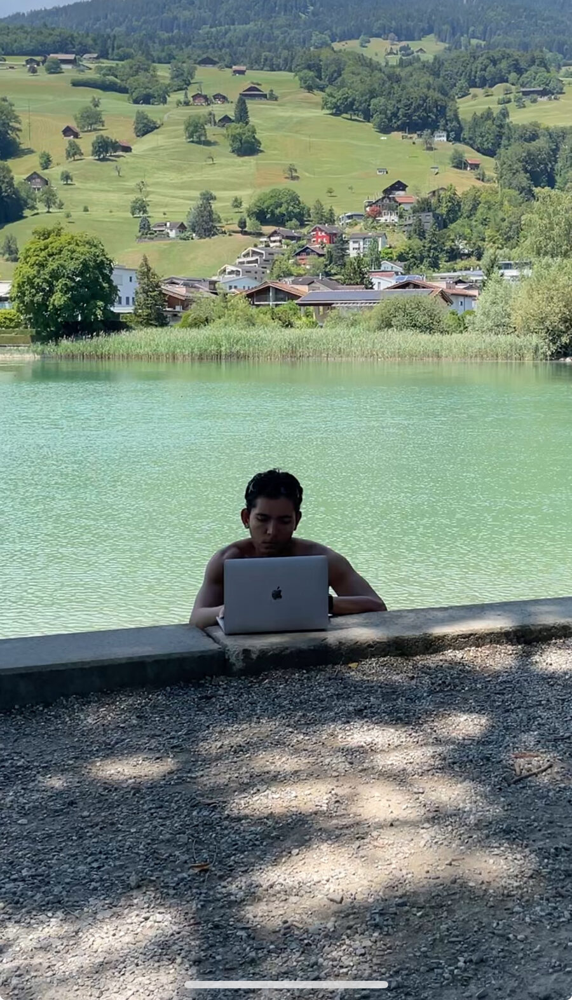
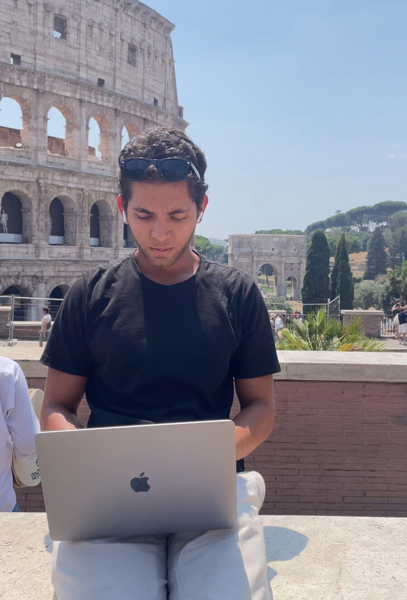
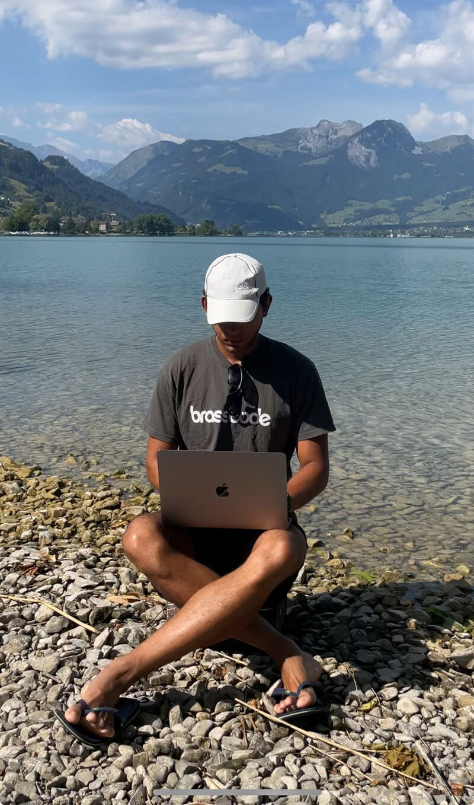
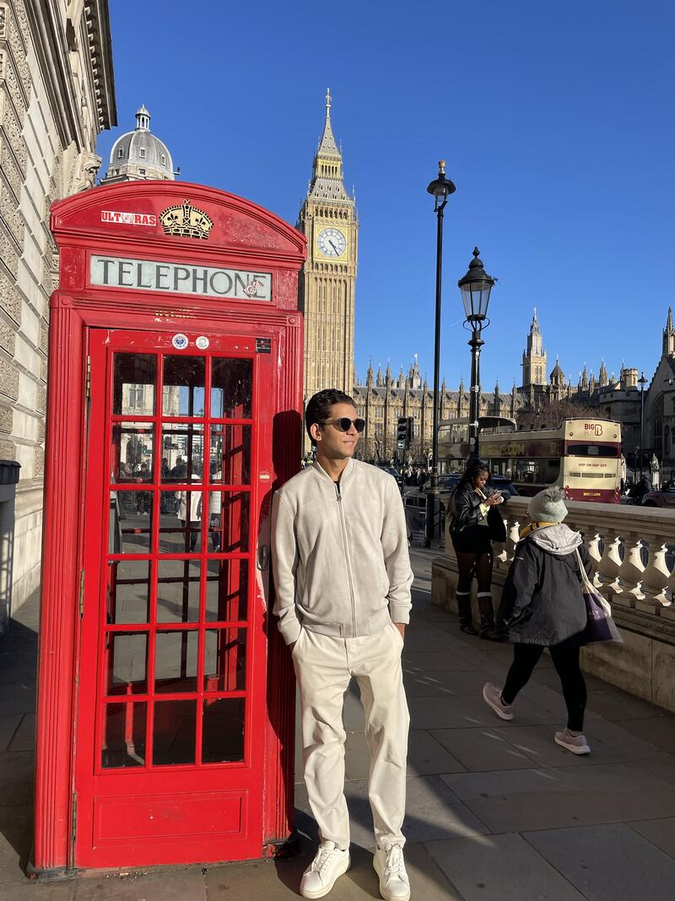
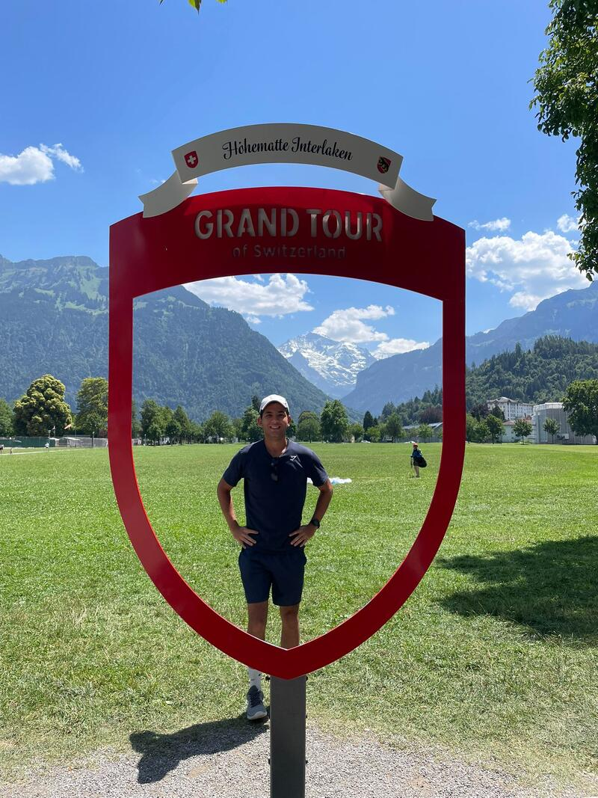

Trabalhe de qualquer lugar. Comece a construir uma vida com mais liberdade — mesmo do zero.
QUERO SER UM NÔMADE DIGITALPor apenas R$ 297
✓ Garantia de 7 dias | ✓ Acesso imediato | ✓ Comece sem largar o emprego




Talvez você se reconheça aqui
Você acorda. Trabalha. Cumpre sua rotina. Dorme. Repete.
E em algum momento do dia, aquela sensação bate:
Você vê pessoas mandando mensagem da Espanha, trabalhando de cafés em Bali, fazendo chamada de vídeo com vista para o mar — e pensa: "isso não é para mim".
Não é falta de vontade. Você pesquisou. Tentou entender. Mas quanto mais busca, mais confuso fica. São tantos caminhos, tantas opções, tantas pessoas falando coisas diferentes.
Não é falta de vontade.
Não é falta de capacidade.
A maioria das pessoas que sonha em trabalhar de qualquer lugar nunca teve acesso a um caminho claro e organizado para começar.
Foi por isso que eu criei a Formação Nômade Digital.
Um método passo a passo para você descobrir como começar a construir uma renda online — e, com ela, conquistar mais liberdade para trabalhar e viajar de qualquer lugar do mundo.
Você não precisa descobrir isso sozinho. Eu já percorri esse caminho e organizei cada etapa para você.
O que muda na prática
Isso é o que significa construir liberdade geográfica de verdade.
O método em 8 módulos
Os resultados começam a aparecer desde o primeiro módulo — sem precisar terminar o curso para agir.
← Deslize para ver todos os módulos →
Bônus
O suficiente para se comunicar com clientes, passar pela imigração e viver no exterior — mesmo começando do zero em inglês.
Acesso ao grupo de alunos nômades. Troca de experiências, indicações e suporte de quem já está vivendo o estilo de vida.
Lista curada das melhores plataformas internacionais + templates de proposta prontos para fechar seu primeiro cliente.
O que muda depois
o seu próprio caminho.
Quais caminhos de renda online existeme qual faz mais sentido para o seu perfil — sem precisar testar tudo no escuro
Onde encontrar clientes e oportunidades reaisplataformas e sites que pagam em dólar, prontos para receber o seu perfil
Como começar sem largar o empregoconstruindo aos poucos, com segurança, até que faça sentido dar o próximo passo
Como viajar gastando muito menosdestinos estratégicos, timing certo, hacks que só nômades experientes conhecem
Quais ferramentas usar para trabalhar de qualquer lugarsetup, internet, rotina — tudo que você precisa para ser produtivo fora do escritório
Qual é o seu próximo passo concretosem ficar paralisado sem saber por onde começar — você sai do curso com direção
Prova real
Eles estavam exatamente onde você está agora. E decidiram dar o primeiro passo.
Para quem é
Mesmo que hoje você esteja na CLT e nunca tenha trabalhado online
Mesmo que não saiba inglês fluente ou não tenha habilidades técnicas
Mesmo que não faça ideia de qual caminho seguir
Mesmo que não tenha muito dinheiro para investir
Mesmo que esteja começando do absoluto zero
Este curso não é para quem busca dinheiro fácil ou resultado sem esforço.
O Nômade Digital te mostra o caminho — mas quem percorre é você. Se você está disposto a aprender e agir, este é o lugar certo.
Valor
Hoje, você leva tudo isso por apenas:
12x de
R$ 27,48
Ou R$ 297 à vista — menos de 1 real por dia
QUERO SER UM NÔMADE DIGITALAcesso completo e imediato. Garantia de 7 dias sem perguntas.
Garantia
Acesse o curso, assista ao conteúdo e se dentro de 7 dias você achar que não é para você — por qualquer motivo —, devolvemos 100% do seu dinheiro. Sem perguntas, sem burocracia, sem enrolação.
Criador do método
Especialista em estilo de vida nômade e renda digital
Durante anos, Gabriel viveu uma rotina cansativa de trabalho fixo, sentindo que sua criatividade e seu tempo estavam sendo desperdiçados. Ele sabia que queria mais liberdade, mais propósito e mais controle sobre a própria vida.
Foi então que descobriu um novo caminho: maneiras de ganhar em dólar sem precisar vender nada, sem precisar investir dinheiro e sem depender de seguidores.
Aplicando esse método, começou a trabalhar com empresas, ganhar dinheiro online e viver do que ama — com liberdade de tempo, geográfica e financeira.
Hoje, depois de transformar a própria vida, ele decidiu ensinar outras pessoas a fazerem o mesmo. Com o Método Nômade Digital, Gabriel abriu as portas para que qualquer pessoa comum possa garantir uma renda extra online, de forma simples, rápida e real.
FAQ
A decisão é sua
Mas alguém que estava exatamente onde você está agora — cansado da mesma rotina, sem saber por onde começar — tomou uma decisão simples:
Decidiu aprender o caminho.
Hoje está mandando mensagem da Espanha. Trabalhando do lago na Suíça. Fechando o primeiro cliente em dólar.
Essa decisão começa aqui.
Por apenas
R$ 297
ou 12x de R$ 27,48
QUERO SER UM NÔMADE DIGITALAcesso completo e imediato. Garantia de 7 dias.